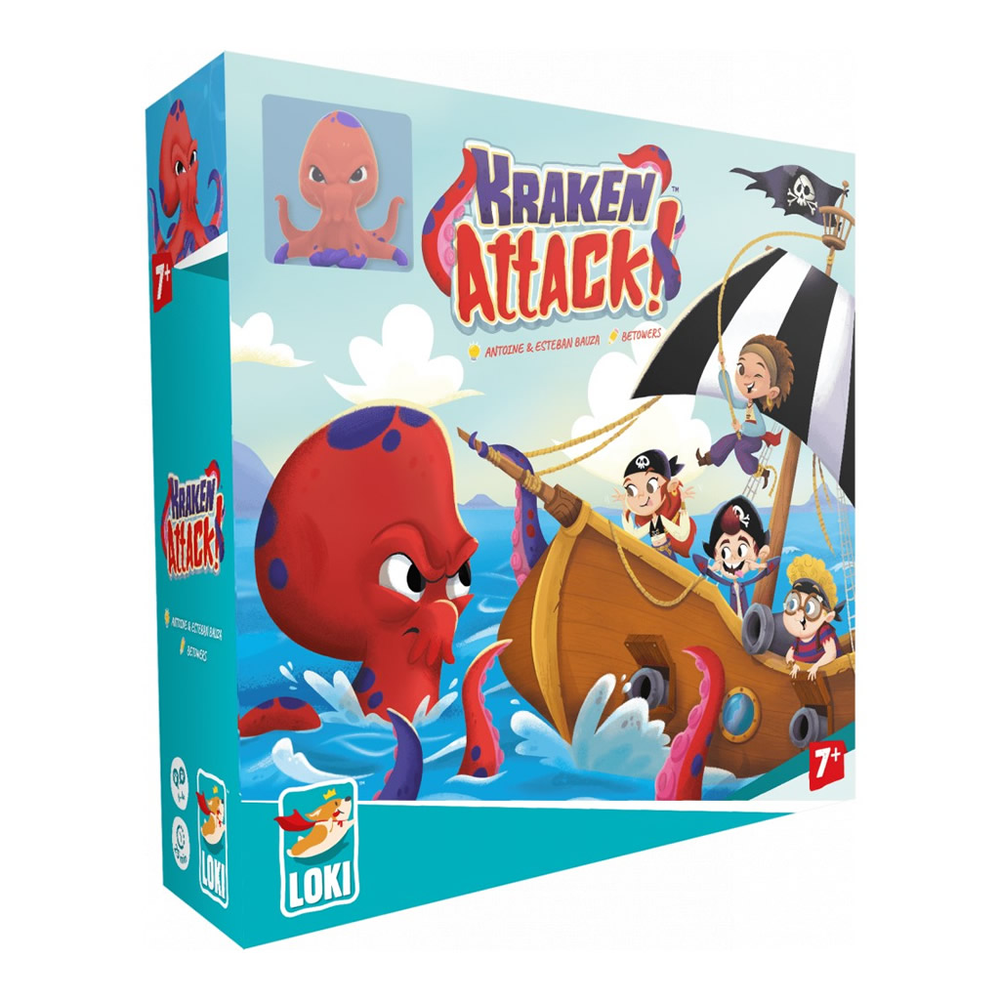
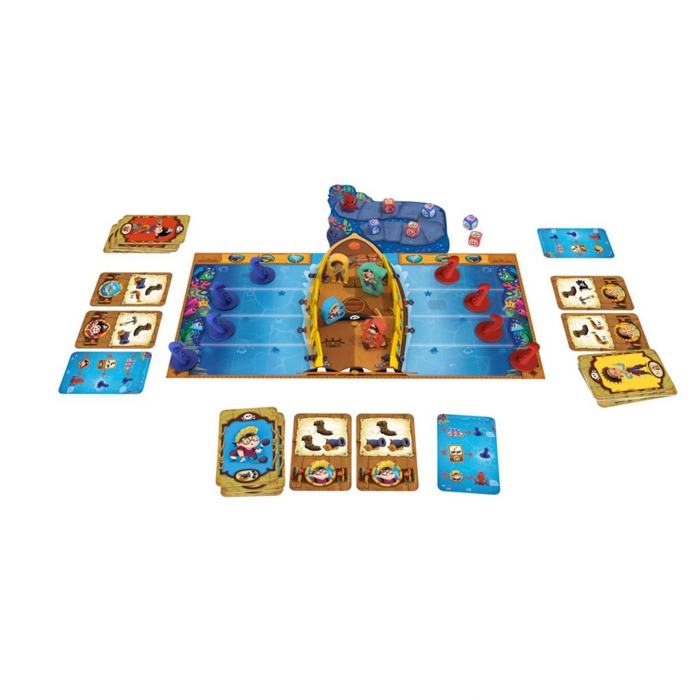

Kraken Attack ! est un jeu coopératif dans lequel les joueurs incarnent des pirates tentant de défendre leur navire contre un gigantesque kraken. À chaque tour, les tentacules avancent selon des lancers de dés, puis les joueurs jouent des cartes pour repousser l’attaque, réparer le bateau ou utiliser leurs capacités spéciales.
Le jeu comprend un plateau représentant un bateau, un plateau de progression du kraken, des figurines de tentacules, une figurine de kraken, des cartes Action et des dés spéciaux. L’univers est celui de pirates affrontant un monstre marin dans une aventure dynamique, colorée et accessible, particulièrement adaptée aux familles.
Les joueurs gagnent collectivement s’ils parviennent à repousser le kraken en lui infligeant suffisamment de dégâts, matérialisés par des jetons placés sur sa piste. En revanche, ils perdent immédiatement si le bateau subit trop de dégâts, notamment lorsque plusieurs trous apparaissent et finissent par le faire sombrer.
7 ans
joueurs
minutes
Prix constatés le 29/05/2026